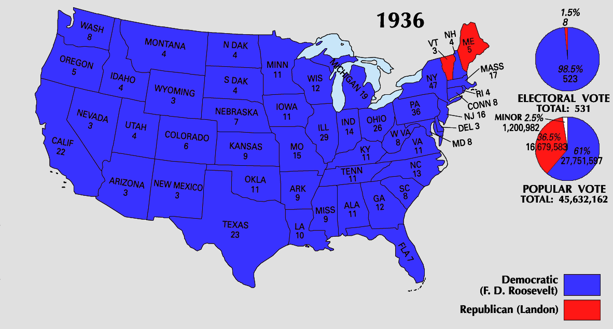
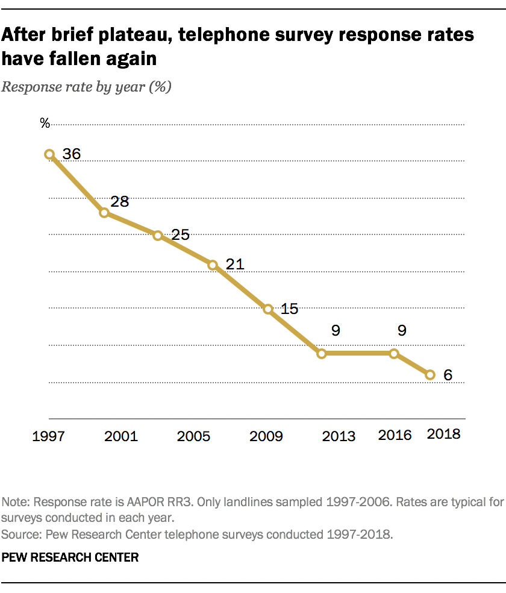
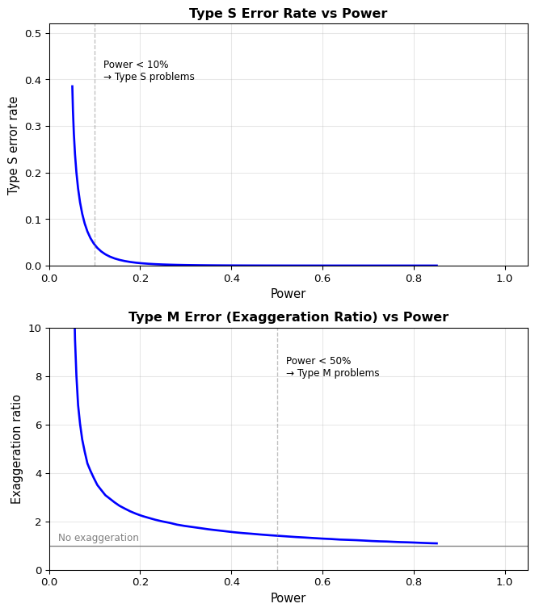
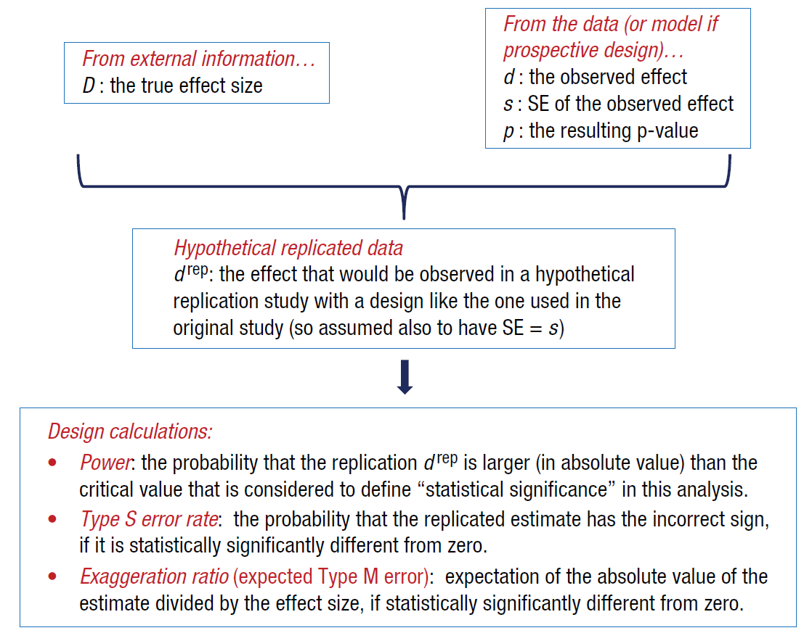

After completing this chapter, you will be able to:
Design and critique surveys by distinguishing target populations from sampling frames, choosing appropriate sampling methods, recognizing nonresponse mechanisms, and applying postsurvey adjustments.
Design and critique experiments with a focus on reliability, internal validity, and external validity; incorporate controls, randomization, replication, and balanced factor combinations.
Differentiate within-subject and between-subject designs and explain matching and randomized blocks.
Perform practical power analysis for common comparisons and interpret Type S (sign) and Type M (magnitude) error diagnostics in study design and result interpretation.
Connect design choices to inference quality, understanding when observational comparisons mislead and when randomization or adjustment is necessary.
13.2 The Importance of Data Collection
13.2.1 A Cautionary Tale: The 1936 Literary Digest Poll
In 1936, American magazine The Literary Digest undertook a massive project: they mailed questionnaires to 10 million readers and potential readers for an election poll.1 This was election polling by brute force.
They received 2.27 million responses – an enormous sample by any standard.
Based on these responses, they confidently predicted victory for Republican candidate Alf Landon, who they forecast would receive 55% of the popular vote and 370 (out of 531) electoral votes, over the Democrat Franklin D. Roosevelt with 41% of the popular vote.
The Literary Digest’s Full Poll Results by State
State
Electoral Vote
Landon Poll Total
Roosevelt Poll Total
Alabama
11
3,060
10,082
Arizona
3
2,337
1,975
Arkansas
9
2,724
7,608
California
22
89,516
7,608
Colorado
6
15,949
10,025
Connecticut
8
28,809
13,413
Delaware
3
2,918
2,048
Florida
7
6,087
8,620
Georgia
12
3,948
12,915
Idaho
4
3,653
2,611
Illinois
29
123,297
79,035
Indiana
14
42,805
26,663
Iowa
11
31,871
18,614
Kansas
9
35,408
20,254
Kentucky
11
13,365
16,592
Louisiana
10
3,686
7,902
Maine
5
3,686
7,902
Maryland
8
17,463
18,341
Massachusetts
17
87,449
25,965
Michigan
19
51,478
25,686
Minnesota
11
30,762
20,733
Mississippi
9
848
6,080
Missouri
15
50,022
8,267
Montana
4
4,490
3,562
Nebraska
7
18,280
11,770
Nevada
3
1,003
955
New Hampshire
16
9,207
2,737
New Jersey
16
58,677
27,631
New Mexico
3
1,625
1,662
New York
47
162,260
139,277
North Carolina
13
6,113
16,324
North Dakota
4
4,250
3,666
Ohio
26
77,896
50,778
Oklahoma
11
14,442
15,075
Oregon
5
11,747
10,951
Pennsylvania
36
119,086
81,114
Rhode Island
4
10,401
3,489
South Carolina
8
1,247
7,105
South Dakota
4
8,483
4,507
Tennessee
11
9,883
19,829
Texas
23
15,341
37,501
Utah
4
4,067
5,318
Vermont
3
7,241
2,458
Virginia
11
10,223
16,783
Washington
8
21,370
15,300
West Virginia
8
13,660
10,235
Wisconsin
12
33,796
20,781
Wyoming
3
2,526
1,533
State Unknown
7
1,586
545
TOTAL
531
1,293,669
972,897
Source: Literary Digest, 31 October 1936
The poll showed Landon winning with 1,293,669 votes to Roosevelt’s 972,897 (about 57% to 43%).
The results turned out quite different. Roosevelt won 61% of the popular vote and 523 (out of 531) electoral votes, against just 36.5% for Landon. It wasn’t even close.

The actual 1936 election results showed a Roosevelt landslide, the opposite of what the Literary Digest predicted. Source: National Atlas of the United States.
What Went Wrong?
The Literary Digest was not a newcomer to polling – they had run polls since 1920 and forecast the winner correctly every time. However, they were not highly regarded by academic experts, as their policy was to report results such that they were not “weighted, adjusted, nor interpreted.”
Three major issues emerged:
Sampling frame problems: Their method was to find addresses from automobile and telephone registries, in addition to their subscribers. Were these representative of the population as a whole?
Nonresponse bias: While 2.27 million responses were received, this represented less than 25% response rate. Were the responses unbiased?
Timing issues: The poll was conducted several months before the election. Was there an opinion swing between the poll and the election?
Three Questions to Always Ask
When evaluating any survey or study, ask:
Sampling frame vs. target population: Does the list you’re sampling from actually represent who you want to learn about?
Nonresponse and selection: Who chose to respond? Are they systematically different from those who didn’t?
Temporal validity: If measuring something that changes over time, when was the measurement taken?
The Postmortem Evidence
The failure of the poll attracted significant interest at the time. In 1937, Gallup ran a poll to try to help understand why it failed. These results were further analyzed and reported by Squire (1988).
The findings from Gallup’s 1937 analysis are reported below in three tables.
Before looking at the explanations below, examine each table and think: what does this reveal about why the poll failed?
Table 1: 1936 Presidential Vote by Car and Telephone Ownership (in Percent)
Presidential Vote
Car & Phone
Car, No Phone
Phone, No Car
Neither
Roosevelt
55
68
69
79
Landon
45
30
30
19
Other
1
2
0
2
Total N
946
447
236
657
Source: American Institute of Public Opinion, 28 May 1937
What does this tell us?
This table reveals a clear pattern: Roosevelt support increased as wealth decreased. Among those with neither car nor phone (the poorest group), Roosevelt won 79–19. Among those with both (the wealthiest), he still won but only 55–45. Since the Literary Digest sampling frame relied on car and phone registries, it systematically overrepresented wealthier voters who were more favorable to Landon. Still, this sampling frame bias alone is not enough to reverse the predicted outcome from Roosevelt winning to Landon winning.
Table 2: Presidential Vote by Receiving Literary Digest Straw Vote Ballot or Not (in Percent)
Presidential Vote
Received Poll
Not Receive Poll
Do Not Know
Roosevelt
55
71
73
Landon
44
27
25
Other
1
1
3
Total N
780
1339
149
Source: American Institute of Public Opinion, 28 May 1937
What does this tell us?
This table confirms that the sampling frame problem alone doesn’t fully explain the failure. Among those who actually received the poll, Roosevelt still won 55–44 (matching the actual 61% popular vote reasonably well, given the wealth bias). The real issue must have been in who chose to respond.
Table 3: Presidential Vote by Returning or Not Returning Straw Vote Ballot (in Percent)
Presidential Vote
Did Return
Did Not Return
Do Not Know
Roosevelt
48
69
56
Landon
51
30
40
Other
1
1
4
Total N
493
288
48
Source: American Institute of Public Opinion, 28 May 1937
What does this tell us?
Here’s the smoking gun: among those who received the poll ballot, those who returned it voted only 48% for Roosevelt (losing 48–51 to Landon), while those who didn’t return it voted 69% for Roosevelt. The poll’s prediction was based entirely on those who returned ballots – and they were systematically different from non-responders. This is classic nonresponse bias.
The Verdict
According to these results, the main reason for the failure seems to have been nonresponse bias.
Roosevelt won 55–44 among those who received the poll, but for some reason the Roosevelt-supporting majority was less active in returning their answers than the Landon-supporting minority.
Scale Cannot Fix Bias
Even with 2.27 million responses, systematic nonresponse bias overwhelmed the large sample size. Scale does not immunize against bias.
This observation is very important, given the rapidly decreasing response rates to many surveys today.

Response rates to US phone-based surveys have declined dramatically. Source: Pew Research Center
13.2.2 Types of Data Collection
We will consider two main types of data collection:
Surveys are an example of observational studies, where data is collected by asking people. We observe what exists without intervening.
Experiments are studies that involve the comparison of two or more interventions. The job of the experimenter is to select which interventions are applied and when.
Both require careful design to produce credible inferences.
Finnish Terminology Reference
For Finnish-speaking students, here’s a reference table of key terms:
English
Finnish
Survey
Kyselytutkimus (myös: luotaus, kartoitus)
Observational study
Havainnoiva tutkimus
Experiment
Koe
Intervention
Interventio
Target population
Perusjoukko, kohdepopulaatio, kohdeväestö
Sampling frame
Otantakehikko
Sampling
Otanta
Cluster sampling
Ryväsotanta
Stratified sampling
Ositettu otanta
Panel
Paneeli
Nonresponse
Vastaamattomuus
Control group
Verrokkiryhmä (verrokki)
Reliability
Luotettavuus
Internal validity
Sisäinen validiteetti
External validity
Ulkoinen validiteetti, ulkoinen pätevyys
Systematic error
Systemaattinen virhe
Replication
Replikaatio
Randomization
Satunnaistaminen
Within-subject design
Toistomittausasetelma
Between-subject design
Riippumattomien ryhmien asetelma
Matched pairs
Kaltaistetut parit
Randomized blocks
Satunnaistettujen lohkojen asetelma
Factorial design
Tekijäkoeasetelma, yhdistelyasetelma
Latin square
Latinalainen neliö
Fractional factorial
Osittainen tekijäkoeasetelma
13.3 Survey Planning
13.3.1 Surveys and Inference
In the inference chapters, we often assumed an IID sample X_1, \ldots, X_n \sim F that was used for inference about the population distribution F.
The same inference methods can be applied to learn about properties of a large but finite population of N individuals using a smaller sample of n individuals.
When the individuals are people, drawing an IID sample can become difficult.
The problem becomes even more difficult when the properties of interest are not objective physical properties but something like subjective opinions.
13.3.2 Survey Pitfalls: Two Critical Steps
A survey aims at gathering information from respondents to make inferences about a larger population.
This process involves two steps that may introduce distinct sources of uncertainty or error in the inferences:
Question → Respondent: The responses provided by the respondents to the survey may lead to incorrect inferences about the features of the respondents, for example if the survey questions are poorly chosen.
Respondents → Population: The inferred features about the respondents may lead to incorrect inferences about the features of the population if the respondents are not a representative sample, for example because of selective nonresponse, or if the original sample was poorly selected.
Warning
You need to fix both the questions and the sample. Getting one right while failing at the other still produces unreliable inferences.
13.3.3 From Target Population to Responses
Good surveys start by defining a target population – for example, all residents of an area in a given age range, or all users of a service.
Survey respondents need to be reached to answer questions. Practical restrictions require defining a sampling frame from which the actual sample is drawn.
Target Population: The entities about which you want to infer.
Sampling Frame: The operational list or mechanism from which samples are drawn.
Example sampling frames:
For phone-based surveys: all phone numbers in a registry, or simply all phone numbers
For mail-in surveys: everyone with a known mailing address, or all buildings in a region
For internet-based surveys: all visitors to some website(s) in a given period of time
For surveys of companies: companies listed in some registry
Imperfect Frames Are the Norm
The sampling frame is often an imperfect representation of the population. For example:
People who have recently moved may not have updated contact information
Not everyone owns a phone or has a regular mailing address
Others might have multiple phones or addresses
People might not visit the website during the specified time window for various reasons
Recently established companies may not be in the registry yet
Coverage gaps between the frame and the target population introduce systematic errors.
Example: The 1936 Poll’s Sampling Frame
What was the sampling frame in the Literary Digest poll? Which issues can you identify?
Answer
Sampling frame: Automobile and telephone registries, plus magazine subscribers.
Coverage issues: In 1936, during the Great Depression, car and phone ownership was associated with wealth. The sampling frame systematically excluded poorer voters, who heavily favored Roosevelt.
Nonresponse issues: Even among those who received the poll, response was associated with political preference and socioeconomic status.
13.3.4 Sampling Methods
In theory, the best method for sampling is often uniformly random sampling (simple random sampling) – every unit in the frame has an equal probability of selection.
However, operational constraints often lead to other methods:
Cluster sampling is sometimes used to simplify data collection, for example in sampling pupils one class at a time instead of independently. The results need to be corrected for within-cluster homogeneity, though.
Cluster Sampling: Design Effect
Cluster sampling has a problem: observations within a cluster tend to be similar to each other. Students in the same classroom have similar backgrounds, people in the same neighborhood have similar incomes, etc.
This similarity means you get less information per observation than with simple random sampling. When everyone in a cluster is similar, surveying 20 people from that cluster tells you less than surveying 20 randomly selected people from across all clusters.
The design effect (DEFF) quantifies how much this inflates the variance of your estimator:
\text{DEFF} = 1 + (m - 1)\rho
where m is average cluster size and \rho is the intra-cluster correlation (ICC) — how similar people within a cluster are.
If \rho = 0 (no similarity within clusters), then DEFF = 1 (no penalty)
If \rho > 0 (people in clusters are similar), then DEFF > 1 (your estimator has higher variance)
Example: You sample 1000 students by randomly selecting 50 classrooms with 20 students each. If students within a classroom have ICC = 0.2, then:
\text{DEFF} = 1 + (20-1) \times 0.2 = 4.8
Your effective sample size is only about 1000/4.8 \approx 208 students – you’d need nearly 5 times as many students to achieve the same precision as simple random sampling!
Stratified sampling can be used to ensure sufficient representation from different subgroups. Unlike cluster sampling, this can actually increase precision (reduce variance of your estimator) if strata are homogeneous within and heterogeneous between – because you’re guaranteed to sample from all the different groups, rather than missing some by chance.
Panels are samples that are reused over time. This reduces the effort of contacting new individuals every time and can help track changes in some phenomenon over time (selecting a fresh sample every time might increase variability between consecutive analyses). The downside of a panel is that as the same sample is reused multiple times, any biases in the original sample are propagated to more analyses.
13.3.5 Respondents vs. Nonrespondents
After the sample has been drawn, usually only a subset respond.
Professional pollsters devote significant resources to trying to chase the nonrespondents – multiple contact attempts, incentives, mixed-mode follow-up.
As illustrated by the 1936 election poll example (and the FINRISK example in Chapter 12), trying to understand the nonrespondents better is critical for accurate results.
Response Mechanisms (same as the missing data mechanisms discussed in Chapter 12):
MCAR (Missing Completely At Random): Response probability is independent of everything
MAR (Missing At Random): Response probability depends only on observed covariates
MNAR (Missing Not At Random): Response probability depends on the unobserved outcome itself
Nonresponse is often effectively MNAR in practice.
Systematic differences between respondents and nonrespondents distort estimates more than random error does. With declining response rates (often below 10% for phone surveys), even well-designed surveys face serious challenges.
Example: Simulating Nonresponse Bias
Let’s simulate a scenario where we’re trying to estimate the prevalence of some outcome (Y) in a population of 20,000 people. However, response probability depends on an unobserved variable Z (like socioeconomic status or political interest), and Z also affects the outcome. This creates MNAR nonresponse – people with higher Z are more likely to respond, and they also have different outcomes.
Show code
import numpy as npimport matplotlib.pyplot as plt# Simulate nonresponse biasrng = np.random.default_rng(42)n =20000# Z is a latent variable (e.g., political interest or socioeconomic status)Z = rng.normal(0, 1, n)# True outcome depends on ZY = (Z >0.2).astype(int) # True prevalence: P(Y=1) varies with Z# Response probability depends on Z (MNAR-like)# People with high Z are more likely to respondp_resp =1/ (1+ np.exp(-(-0.5+1.2*Z)))R = rng.binomial(1, p_resp)# Compare true prevalence vs respondent prevalencep_true = Y.mean()p_resp_est = Y[R==1].mean()print(f"True prevalence: {p_true:.3f}")print(f"Naive estimate from respondents: {p_resp_est:.3f}")print(f"Bias: {p_resp_est - p_true:.3f}")print(f"Response rate: {R.mean():.1%}")plt.figure(figsize=(7, 3.5))bars = [p_true, p_resp_est]colors = ['#0173B2', '#DE8F05']plt.bar([0, 1], bars, color=colors, width=0.6)plt.xticks([0, 1], ["True\nprevalence", "Respondent\nprevalence"])plt.ylabel("Proportion")plt.title("Nonresponse Bias: Large n Doesn't Save You")plt.ylim(0, max(bars) *1.2)for i, v inenumerate(bars): plt.text(i, v +0.01, f'{v:.3f}', ha='center', va='bottom')plt.tight_layout()plt.show()
Even with 20,000 observations, if response depends on the outcome (MNAR), the naive estimate is badly biased.
13.3.6 Postsurvey Adjustments
After all the responses are in and cleaned up, it is usually useful to apply postsurvey adjustments. The idea is to use known population characteristics (from census data, registries, etc.) to correct for imbalances in who responded.
Common methods:
Weighting: If you know the true population proportions of age groups, gender, or region, you can reweight respondents to match those proportions
Poststratification: Reweight to match known population proportions in each stratum (e.g., you know 40% are women aged 18-30, 15% are men aged 60+, etc.)
Raking: When you only know the marginal totals (e.g., 52% women overall, 25% aged 18-30 overall) but not the full cross-tabulation (women aged 18-30), iteratively adjust weights to match each marginal separately
Model-based adjustments: Build models to predict outcomes for nonrespondents based on observed covariates, or use multiple imputation when assumptions are plausible
Limitations
These adjustments can help with MAR nonresponse (where response depends on observed covariates), but they cannot fully fix coverage gaps or strong MNAR. If nonresponse is strongly related to the outcome in ways not captured by your observed covariates, no adjustment can recover the truth — you’re missing information you can’t reconstruct.
13.3.7 Designing Good Survey Questions
In order to answer a survey question, the respondent has to go through multiple stages (Groves et al. 2009):
Comprehension or interpreting the question
Retrieval of information needed to answer
Judgment to combine and process the recalled information
Reporting to formulate the response
Good survey questions take these steps into account to ensure reliable responses.
Question Design Pitfalls
Ambiguous questions or formulations unclear to respondents: Using jargon, assuming knowledge, or combining multiple questions (“double-barreled” questions)
Trusting human memory too much: Asking about events from long ago or requiring detailed recall
Difficult questions and the substitution heuristic: According to Kahneman (2011), people subconsciously substitute an easier question for a difficult one
Example: “Should I invest in Ford Motor Company stock?” → “Do I like Ford cars?”
Offered options bias the answers: Order effects (people favor options presented first or last), anchoring (initial values influence estimates), and the specific range of options provided (asking “0-50 or 50-100?” vs. “0-500 or 500-1000?” elicits different responses)
Social desirability bias: People may not be equally honest in all questions
Practical Guidelines for Survey Questions
Pilot test questions with a small group first
Use clear time windows (“in the past week” rather than “recently”)
Use neutral wording (avoid leading or loaded language)
Limit recall burden (don’t ask for details from years ago)
Balance/rotate options to avoid order effects
Consider indirect questioning for sensitive topics
13.3.8 Sampling Summary: The Five-Step Process
Define the target population
Construct the sampling frame
Draw the sample using an appropriate method
Collect data from respondents and understand nonrespondents
Apply postsurvey adjustments
Each step requires careful thought and introduces potential sources of error.
13.4 Experimental Design
13.4.1 What Is an Experiment?
An experiment involves active manipulation of some factors, known as independent or input variables, to determine their impact on a selected target(s), also known as dependent or output variable(s).
Experiments are everywhere:
Daily life: What impact would leaving 10 minutes earlier have on your commute?
Science and engineering: What impact would changing conditions of a process have?
Business: How would changing customer offering impact sales and profits?
Data science and machine learning: Which hyperparameters should be used?
13.4.2 Goals of a Good Experiment
Reliability: Whether the measure will produce a similar value when the measuring instrument is reapplied.
Internal Validity: Whether the effects observed in a study are due to the independent variable of interest and not some other confounding factor.
External Validity: Whether (causal) relationships can be generalized to different measures, persons, settings, and times.
These three properties form the foundation of credible experimental evidence.
13.4.3 Experimental Design Pitfalls
Just as surveys can go wrong in systematic ways, so can experiments. We list the major pitfalls below.
Systematic Errors
Systematic errors are biases introduced by the experimental process itself. Examples include experiment operator effects (different technicians measuring differently), time-of-day or seasonal effects, instrument drift over time, and learning effects as operators gain experience.
These systematic errors become especially problematic when they correlate with experimental variables. For instance, if one lab technician always measures treatment cases while another measures controls, you cannot distinguish treatment effects from technician effects. Similarly, if you test all controls in the morning and all treatments in the afternoon, time-of-day effects confound your results.
Mitigation
Randomize measurement order; standardize protocols across operators and time; blind experimenters to treatment conditions where possible.
Lack of Replication
Lack of replication prevents you from distinguishing true effects from random variation. Without repeating measurements under the same conditions, an observed difference might be due to the treatment – or it might be noise from uncontrolled factors.
The minimum number of replicates is 2 to detect that variability exists, while 3 replicates allows you to identify and potentially exclude outliers. In practice, you often need many more replicates, depending on the inherent variability of your system and the size of effect you want to detect. Low replication leads directly to low statistical power (discussed later in this chapter).
Changing Multiple Things at Once
Changing multiple things at once creates ambiguity about causation. If you simultaneously change temperature and pressure in an industrial process and observe improved yield, which change was responsible? You cannot tell – the effects are confounded.
Mitigation
Use factorial thinking – test combinations systematically (discussed below under factorial designs), or change one factor at a time while holding others constant. Balanced designs allow you to study multiple factors efficiently without losing the ability to separate their effects.
Lack of Controls
Lack of controls removes your baseline for comparison. When studying interventions over time, outcomes naturally change even without treatment due to temporal trends, regression to the mean, or environmental shifts. Without a concurrent control group receiving no treatment (or the current standard treatment), you cannot isolate the treatment’s specific contribution.
Using historical controls – comparing current treatment subjects to past control subjects – is especially risky because systematic changes in environment, measurement procedures, subject populations, or operator experience may have occurred between time periods. These temporal confounds make it impossible to attribute differences specifically to the treatment.
Beware “Historical Controls”
Using old data as controls introduces confounding: something may have changed in the environment (seasonality, operators, instruments, populations). Prefer concurrent controls randomized within the same study conditions.
13.4.4 Within-Subject and Between-Subject Designs
In a within-subject design, each subject receives all the treatments, while in a between-subject design different treatments are given to different subjects.
Both designs have their own pros and cons:
Aspect
Within-Subject
Between-Subject
Comparison
Direct comparison within same subject
Comparison across subjects
Efficiency
Higher (controls for individual variation)
Lower (more between-subject variability)
Main problem
Interactions between treatments (carryover effects, order effects, etc.)
Greater variability
Mitigation
Randomize/counterbalance order
Matching, randomized blocks
In a good within-subject design, the order of treatments should be random for each subject to avoid systematic order effects.
Variability in between-subject designs can sometimes be reduced with matching: finding closely matching subjects who are given the alternative treatments. With two treatments this leads to matched pairs, with more treatments to randomized blocks design.
Example: Matched Pairs
In a clinical trial comparing two pain medications:
Between-subject (unmatched): Randomly assign 50 patients to drug A, 50 to drug B
Matched pairs: Find 50 pairs of similar patients (matched on age, condition severity, etc.), then randomize one in each pair to drug A, the other to drug B
The matched design has much higher power because it reduces between-subject variability along the matched dimensions (age, severity). Unmatched characteristics still contribute variability, but by controlling for the most important sources of variation, matching substantially improves precision.
13.4.5 Factorial Designs and Latin Squares
When there are more factors, the number of possible combinations grows exponentially.
In order to fully understand possible interactions of the factors, it is necessary to test all combinations, known as factorial design.
For example, with 3 factors each at 3 levels: 3^3 = 27 experimental runs.
Combinatorial designs such as Latin squares and their generalizations, as well as fractional factorial designs, allow deriving balanced designs of subsets of combinations, therefore reducing the number of experiments needed.
However, they should only be used when there are no significant interactions between the factors.
With factors \(A\),
\(B\),
\(C\) each at 3 levels:
\(3^3 = 27\) experiments
B \ A
\(A_1\)
\(A_2\)
\(A_3\)
\(B_1\)
\(C_1, C_2, C_3\)
\(C_1, C_2, C_3\)
\(C_1, C_2, C_3\)
\(B_2\)
\(C_1, C_2, C_3\)
\(C_1, C_2, C_3\)
\(C_1, C_2, C_3\)
\(B_3\)
\(C_1, C_2, C_3\)
\(C_1, C_2, C_3\)
\(C_1, C_2, C_3\)
All 27 combinations are tested.
A Latin square arranges one factor’s levels such that each level
appears exactly once in each row and once in each column. This balances
the third factor across both other factors.
This yields only \(3 \times 3 = 9\)
experiments:
B \ A
\(A_1\)
\(A_2\)
\(A_3\)
\(B_1\)
\(C_1\)
\(C_2\)
\(C_3\)
\(B_2\)
\(C_2\)
\(C_3\)
\(C_1\)
\(B_3\)
\(C_3\)
\(C_1\)
\(C_2\)
Each level of \(C\) appears exactly
once in each row (level of \(B\)) and
column (level of \(A\)).
This balances \(C\) across
\(A\) and
\(B\) while reducing runs by 2/3.
The Trade-off: Reduced Designs and Confounding
Both Latin squares and fractional factorials save experimental runs by aliasing (deliberately confounding) some effects together.
Latin squares assume no interactions between factors. If A and B interact, or if A and C interact, the Latin square will confound these interactions with main effects, making it impossible to separate them.
Fractional factorials similarly confound higher-order interactions with lower-order effects to reduce the number of required runs.
Use reduced designs only when you can credibly assume no important interactions exist, based on subject-matter knowledge or preliminary experiments. Otherwise, you risk mistaking interaction effects for main effects.
13.4.6 Experimental Design Takeaways
The key principles for credible experiments:
Remember to include controls (concurrent, not historical)
Replicate (minimum 2–3, more is better)
Randomize everything you possibly can:
Order of applying treatments
Order of making measurements
Assignment of experimenters and instruments
Use Latin squares or other combinatorial designs to construct balanced combinations when full factorial design is infeasible
Core Principles of Experimental Design
Replication: Multiple independent observations to estimate variability
Randomization: Breaks links between treatments and lurking variables
Blocking (or matching): Groups similar units to reduce noise
These principles apply across all experimental sciences.
Connection to Causal Inference
As discussed in Chapter 11, randomization is critical for causal inference because random assignment of treatment breaks the link between treatment and confounding variables. With randomization, observed associations reflect causal effects rather than spurious correlations due to selection bias or confounding.
13.5 Power and Design Analysis
13.5.1 Classical Power: What It Tells (and Doesn’t)
Power calculation is about estimating the necessary sample size in order to have sufficient probability to detect changes of assumed magnitude with statistical significance.
Power calculation is essential in research to ensure studies have a high probability of reaching the desired outcome.
Statistical Power: The probability of rejecting the null hypothesis when it is false. Equivalently, the probability of detecting an effect of a specified size at a chosen significance level \alpha.
Power depends on:
Effect size (larger effects → higher power)
Variance (lower variance → higher power)
Sample sizen (larger n → higher power)
Significance level\alpha (higher \alpha → higher power, but more Type I errors)
Low-powered studies with too few subjects tend to produce random results: there is a significant risk that any statistically significant results are not reproducible.
Warning
Low-powered studies are unethical because they place a burden on test subjects that is likely to produce nothing of value. If your study has only 20% power, you’re wasting resources 80% of the time, and even the 20% of “successful” results may be misleading (as we’ll see next).
13.5.2 Type S and Type M Errors
Gelman and Carlin (2014) highlight two additional error types that are crucial for understanding what happens in low-power settings:
Type S (Sign) Error: The probability that the estimate has the incorrect sign, if it is statistically significantly different from zero.
Type M (Magnitude) Error (exaggeration ratio): The expectation of the absolute value of the estimate divided by the effect size, if statistically significantly different from zero.
These errors reveal a pattern: in low-power studies, statistically significant results are often in the wrong direction and greatly exaggerated.
Why This Matters
Classical power analysis asks: “Will I detect an effect?”
Type S and M errors ask: “If I detect something, can I trust the direction and magnitude?”
In noisy, small-sample settings:
Type S error: A “significant” result might actually be the opposite of the truth
Type M error: A “significant” result might be 5× or 10× larger than reality
Publication filters on significance amplify these problems: the literature fills up with wrong-signed and exaggerated effects.
To understand the relationship between power and these error types, we reproduce the analysis from Figure 2 of Gelman and Carlin (2014) for unbiased estimates that are normally distributed:

Type S error rate and exaggeration ratio as a function of power for unbiased, normally distributed estimates.
Key observations:
Type S errors become serious below 10% power: When power drops below 0.1, statistically significant results are likely to have the wrong sign – your “discovery” points in the opposite direction of truth.
Type M errors (exaggeration) become serious below 50% power: When power is much below 0.5, statistically significant estimates tend to be much larger in magnitude than the true effect size – often overestimating by factors of 2, 5, or more.
High power protects against both: With 80% power (the conventional standard), Type S error rate is negligible (~0.001%) and the exaggeration ratio is small (~1.1×), meaning your estimates are reliable in both direction and magnitude.
13.5.3 Design Analysis Workflow

Diagram of Gelman & Carlin’s recommended approach to design analysis. It will typically make sense to consider different plausible values of D, the assumed true effect size. Source: Figure 1 from Gelman and Carlin (2014).
The recommended approach from Gelman and Carlin (2014):
Use external information (literature review, prior studies, meta-analyses) to posit plausible true effect sizes
Not the estimate from your current study
Not just “what would be interesting”
Compute power, Type S, and Type M for your design under these plausible effects
Interpret results through the lens of plausibility:
If your study has low power for plausible effects, a significant finding is suspect
Consider how much exaggeration to expect
Report honestly: Include design analysis in publications, so readers understand limitations
Example: Type S and M Errors for Proportions
Suppose we want to detect a difference in conversion rates between two website designs. We hypothesize the true effect is a 1 percentage point increase (0.01 in proportion).
Setup: Two groups of size n=500 each. For proportions near 0.5, the standard error of the difference is approximately:
from scipy import statsdef retrodesign(D, s, alpha=0.05, df=np.inf, n_sims=20000):"""Compute power, Type S, and Type M errors."""if np.isinf(df): z = stats.norm.ppf(1- alpha/2) p_hi =1- stats.norm.cdf(z - D/s) p_lo = stats.norm.cdf(-z - D/s) power = p_hi + p_lo typeS = p_lo / power if power >0else np.nan est = D + s * np.random.normal(size=n_sims)else: z = stats.t.ppf(1- alpha/2, df) p_hi =1- stats.t.cdf(z - D/s, df) p_lo = stats.t.cdf(-z - D/s, df) power = p_hi + p_lo typeS = p_lo / power if power >0else np.nan est = D + s * np.random.standard_t(df, size=n_sims) sig = np.abs(est) > s * z exaggeration = np.mean(np.abs(est[sig])) /abs(D) if sig.any() and D !=0else np.nanreturn {'power': power, 'typeS': typeS, 'exaggeration': exaggeration}# Design analysis for n=500 per groupresult_500 = retrodesign(D=0.01, s=0.032, alpha=0.05)print(f"n=500 per group (SE=0.032):")print(f" Power: {result_500['power']:.3f}")print(f" Type S error: {result_500['typeS']:.3f}")print(f" Exaggeration: {result_500['exaggeration']:.1f}×")
n=500 per group (SE=0.032):
Power: 0.061
Type S error: 0.188
Exaggeration: 7.6×
With such low power, a statistically significant result has a substantial chance of the wrong sign and will severely overestimate the effect!
What sample size gives 80% power? We need D = 2.8 \times \text{SE}:
0.01 = 2.8 \times 0.5\sqrt{2/n} \implies 0.01 = 1.4\sqrt{2/n} \implies n \approx 39{,}200 \text{ per group}
Show code
# Design analysis for n=39,200 per groupresult_39k = retrodesign(D=0.01, s=0.5*np.sqrt(2/39200), alpha=0.05)print(f"n=39,200 per group (SE≈0.0036):")print(f" Power: {result_39k['power']:.3f}")print(f" Type S error: {result_39k['typeS']:.6f}")print(f" Exaggeration: {result_39k['exaggeration']:.2f}×")
n=39,200 per group (SE≈0.0036):
Power: 0.800
Type S error: 0.000001
Exaggeration: 1.12×
Implication: Small effects require enormous samples. Underpowered studies produce wildly exaggerated, often wrong-signed results.
13.6 Chapter Summary and Connections
13.6.1 Key Concepts Review
Surveys:
Target vs. frame: The population you want to learn about vs. the list you can sample from
Sampling methods: Simple random sampling (gold standard), cluster (watch for design effects), stratified (can improve precision), panels (propagate initial bias)
Nonresponse: Often MNAR in practice; adjustments help but can’t fix everything
Three goals: Reliability, internal validity, external validity
Four pitfalls: Systematic errors, lack of replication, changing multiple things, lack of controls
Design types: Within vs. between subjects; matched pairs and randomized blocks reduce variability
Factorial designs: Explore interactions; Latin squares and fractional factorials save runs but assume no interactions
Randomization:
Breaks links between treatment and confounders
Enables causal interpretation: association = causation (in expectation)
Observational comparisons require extreme caution
Power and Design Analysis:
Classical power: Probability of detecting an effect
Type S error: Probability significant result has wrong sign
Type M error: Expected overestimation factor for significant results
Low power is dangerous: Not just “likely to fail” but “likely to mislead if you succeed”
13.6.2 The Big Picture
Three fundamental lessons from this chapter:
Good data beats clever modeling: No amount of sophisticated analysis can fix bias from poor design. A well-designed study with 100 observations beats a poorly designed study with 10,000.
Randomize and replicate to earn causal interpretations: Without randomization, you’re swimming in a sea of confounders. Without replication, you can’t separate signal from noise.
Plan with realistic effects; interpret significance critically: Use external information about plausible effect sizes. In low-power settings, “p < 0.05” can mean “probably wrong.”
13.6.3 Common Pitfalls to Avoid
Treating sampling frames as if they were populations: Always ask what’s missing from your frame
Ignoring nonresponse bias: With 10% response rates, the 90% who didn’t respond likely differ systematically
No controls or replication: Without controls, you can’t isolate effects; without replication, you can’t assess variability
Changing multiple things at once: Confounds prevent you from learning which change mattered
Overinterpreting significant results from low-power designs: That p < 0.05 might be in the wrong direction and 10\times too large
Using observed effects for power calculations: This creates a circular logic – your noisy estimate makes your underpowered study look well-powered
13.6.4 Chapter Connections
Chapters 1-4 (Probability & Inference): Throughout the course we assumed IID samples X_1, \ldots, X_n \sim F for inference. This chapter reveals what’s required to actually obtain such samples from human populations – careful sampling frames, randomization, and awareness of nonresponse.
Chapters 5-7 (Parametric Inference & Testing): We learned about Type I and Type II errors in hypothesis testing. This chapter introduces Type S (sign) and Type M (magnitude) errors, which reveal what happens when you actually get a “statistically significant” result in a low-power study – it may point the wrong direction and be wildly exaggerated.
Chapter 11 (Causal Inference): Randomization in experiments is the gold standard for causal inference because random assignment of treatment breaks the association between treatment and confounding variables. Observational studies (like surveys) require strong assumptions (no unmeasured confounders) that experiments avoid through randomization.
Chapter 12 (Missing Data): Nonresponse in surveys is fundamentally a missing data problem. The mechanisms (MCAR, MAR, MNAR) apply directly to understanding who responds vs. who doesn’t, and postsurvey adjustments are attempts to handle MAR nonresponse through weighting and modeling.
13.6.5 Self-Test Problems
Problem 1: Sampling Frame Issues
You want to survey university students about mental health. Your sampling frame is the university email directory.
What coverage issues might exist?
What nonresponse issues might you expect?
Propose two mitigation strategies.
Solution Hints
Coverage: Recently enrolled students might not be in directory yet; students on leave are excluded; students who changed email or don’t check university email
Nonresponse: Students with mental health issues might be less likely (or more likely, if seeking help) to respond; busy students; stigma effects
Mitigations: Multiple contact methods (email, text, in-person); incentives; ensure anonymity; poststratification/raking to population margins; use sensitive question techniques
Problem 2: Experimental Design
You’re testing three teaching methods (A, B, C) across three schools (1, 2, 3) with three difficulty levels of material (Easy, Medium, Hard).
How many runs in a full factorial design?
Construct a 3×3 Latin square to reduce the design
What assumption must hold for the Latin square to be valid?
Solution Hints
3^3 = 27 runs (all combinations)
Example Latin square (methods as treatments; school and difficulty as blocks):
School \ Difficulty
Easy
Medium
Hard
School 1
A
B
C
School 2
B
C
A
School 3
C
A
B
This gives 9 runs instead of 27, estimating the main effect of method while blocking school and difficulty.
Assumes no interactions of method with school or difficulty. If Method A works better for Easy material than expected from main effects alone (an interaction), the Latin square will confound this with main effects.
Problem 3: Type S and Type M Errors
A study with n=20 per group compares two means. Assuming equal variances of \sigma^2 = 1, the SE of the difference is \sqrt{1/20 + 1/20} \approx 0.32. If the true effect is D = 0.2, the power is approximately 0.10 (10%).
Would you trust the sign of a significant result? The magnitude?
What sample size would give 80% power? (Hint: 80% power requires the effect to be about 2.8 standard errors from zero)
Solution Hints
No! With only 10% power:
Type S error rate is nontrivial (~5%)
Type M exaggeration is large (~3.5–4×), so significant results substantially overstate the effect size
For 80% power, need effect to be 2.8 SE from zero:
import numpy as npimport pandas as pdfrom scipy import stats# Survey: Poststratification weightingdef poststratify(df, outcome, strata, pop_marginals):""" Reweight survey data to match population marginals (single categorical stratum). Parameters: ----------- df : DataFrame with columns [outcome] and [strata] outcome : str, name of outcome column strata : str, name of stratification variable (categorical) pop_marginals : dict, {level: population proportion} summing to 1 Returns: -------- Weighted mean estimate of outcome """ df = df.copy()# Compute sample proportions per stratum sample_props = df[strata].value_counts(normalize=True)# Weight = population_prop / sample_prop for each stratum df['w'] = df[strata].map(lambda x: pop_marginals.get(x, 0) / sample_props.get(x, 1))# Normalize weights to sum to sample size df['w'] = df['w'] * (len(df) / df['w'].sum())return np.average(df[outcome], weights=df['w'])# Experiment: Difference in means with SEdef diff_in_means(y1, y2):"""Difference in means with Welch standard error (unequal variances).""" n1, n2 =len(y1), len(y2) mean_diff = np.mean(y1) - np.mean(y2) se_diff = np.sqrt(np.var(y1, ddof=1)/n1 + np.var(y2, ddof=1)/n2) # Welch SEreturn mean_diff, se_diff# Power/Design analysisdef retrodesign(D, s, alpha=0.05, df=np.inf, n_sims=10000):""" Design analysis: power, Type S, Type M (two-sided test). D: hypothesized true effect s: standard error alpha: significance level (default 0.05) df: degrees of freedom (np.inf for normal) """if np.isinf(df): z = stats.norm.ppf(1- alpha/2) p_hi =1- stats.norm.cdf(z - D/s) p_lo = stats.norm.cdf(-z - D/s) power = p_hi + p_lo typeS =min(p_lo, p_hi) / power if power >0else np.nan est = D + s * np.random.normal(size=n_sims)else: z = stats.t.ppf(1- alpha/2, df) p_hi =1- stats.t.cdf(z - D/s, df) p_lo = stats.t.cdf(-z - D/s, df) power = p_hi + p_lo typeS =min(p_lo, p_hi) / power if power >0else np.nan est = D + s * np.random.standard_t(df, size=n_sims) sig = np.abs(est) > s * z exaggeration = np.mean(np.abs(est[sig])) /abs(D) if sig.any() and D !=0else np.nanreturn {'power': power, 'typeS': typeS, 'exaggeration': exaggeration}
# Survey: Poststratification weighting (single categorical stratum)poststratify <-function(df, outcome, strata, pop_marginals) {# Compute sample proportions per stratum sample_props <-prop.table(table(df[[strata]]))# Weight = population_prop / sample_prop for each stratum w <- pop_marginals[as.character(df[[strata]])] / sample_props[as.character(df[[strata]])]# Normalize weights to sum to sample size w <- w * (nrow(df) /sum(w))# Weighted meansum(w * df[[outcome]]) /sum(w)}# Experiment: Difference in means (Welch SE for unequal variances)diff_in_means <-function(y1, y2) { n1 <-length(y1) n2 <-length(y2) mean_diff <-mean(y1) -mean(y2) se_diff <-sqrt(var(y1)/n1 +var(y2)/n2) # Welch SElist(diff = mean_diff, se = se_diff)}# Power/Design analysis (two-sided test)retrodesign <-function(D, s, alpha =0.05, df =Inf, n.sims =10000) {if (is.infinite(df)) { z <-qnorm(1- alpha/2) p.hi <-1-pnorm(z - D/s) p.lo <-pnorm(-z - D/s) power <- p.hi + p.lo typeS <-ifelse(power >0, min(p.lo, p.hi) / power, NA) est <- D + s *rnorm(n.sims) } else { z <-qt(1- alpha/2, df) p.hi <-1-pt(z - D/s, df) p.lo <-pt(-z - D/s, df) power <- p.hi + p.lo typeS <-ifelse(power >0, min(p.lo, p.hi) / power, NA) est <- D + s *rt(n.sims, df) } sig <-abs(est) > s * z exaggeration <-ifelse(any(sig) && D !=0,mean(abs(est[sig])) /abs(D),NA)list(power = power, typeS = typeS, exaggeration = exaggeration)}
13.6.7 Connections to Source Material
The Literary Digest case study comes from the History Matters website (“Landon in a Landslide: The Poll That Changed Polling”), while the Gallup postmortem analysis (three tables) comes from Squire (1988). Survey methodology follows Groves et al.’s framework, while Type S and Type M errors come from Gelman and Carlin (2014). Experimental design principles build on classical work by Fisher, Box, and colleagues.
13.6.8 Further Reading
Literary Digest poll: Squire (1988), historical analysis of the 1936 polling failure
Survey design: Groves et al. (2009), comprehensive treatment
Type S/M errors: Gelman and Carlin (2014) in Perspectives on Psychological Science
Remember: The best statistical analysis cannot rescue a poorly designed study. Invest time in design – it’s the foundation of credible inference. Randomize when you can, adjust carefully when you can’t, and always think critically about what your data can and cannot tell you.
Gelman, Andrew, and John Carlin. 2014. “Beyond Power Calculations: Assessing Type s (Sign) and Type m (Magnitude) Errors.”Perspectives on Psychological Science 9 (6): 641–51.
Groves, Robert M, Floyd J Fowler Jr, Mick P Couper, James M Lepkowski, Eleanor Singer, and Roger Tourangeau. 2009. Survey Methodology. 2nd ed. Hoboken, NJ: John Wiley & Sons.
Kahneman, Daniel. 2011. Thinking, Fast and Slow. New York: Farrar, Straus; Giroux.
Details from “Landon in a Landslide: The Poll That Changed Polling” at History Matters – a website so gloriously 1990s it’s a time capsule itself.↩︎
Source Code
---date: today---# Experimental and Survey Design## Learning ObjectivesAfter completing this chapter, you will be able to:- **Design and critique surveys** by distinguishing target populations from sampling frames, choosing appropriate sampling methods, recognizing nonresponse mechanisms, and applying postsurvey adjustments.- **Design and critique experiments** with a focus on reliability, internal validity, and external validity; incorporate controls, randomization, replication, and balanced factor combinations.- **Differentiate within-subject and between-subject designs** and explain matching and randomized blocks.- **Perform practical power analysis** for common comparisons and interpret **Type S (sign)** and **Type M (magnitude)** error diagnostics in study design and result interpretation.- **Connect design choices to inference quality**, understanding when observational comparisons mislead and when randomization or adjustment is necessary.## The Importance of Data Collection### A Cautionary Tale: The 1936 Literary Digest PollIn 1936, American magazine *The Literary Digest* undertook a massive project: they mailed questionnaires to 10 million readers and potential readers for an election poll.^[Details from "Landon in a Landslide: The Poll That Changed Polling" at [History Matters](https://historymatters.gmu.edu/d/5168) -- a website so gloriously 1990s it's a time capsule itself.] This was election polling by brute force.They received 2.27 million responses -- an enormous sample by any standard.Based on these responses, they confidently predicted victory for Republican candidate Alf Landon, who they forecast would receive 55% of the popular vote and 370 (out of 531) electoral votes, over the Democrat Franklin D. Roosevelt with 41% of the popular vote.::: {.callout-note collapse="true"}## The Literary Digest's Full Poll Results by State| State | Electoral Vote | Landon Poll Total | Roosevelt Poll Total ||-------|----------------|-------------------|---------------------|| Alabama | 11 | 3,060 | 10,082 || Arizona | 3 | 2,337 | 1,975 || Arkansas | 9 | 2,724 | 7,608 || California | 22 | 89,516 | 7,608 || Colorado | 6 | 15,949 | 10,025 || Connecticut | 8 | 28,809 | 13,413 || Delaware | 3 | 2,918 | 2,048 || Florida | 7 | 6,087 | 8,620 || Georgia | 12 | 3,948 | 12,915 || Idaho | 4 | 3,653 | 2,611 || Illinois | 29 | 123,297 | 79,035 || Indiana | 14 | 42,805 | 26,663 || Iowa | 11 | 31,871 | 18,614 || Kansas | 9 | 35,408 | 20,254 || Kentucky | 11 | 13,365 | 16,592 || Louisiana | 10 | 3,686 | 7,902 || Maine | 5 | 3,686 | 7,902 || Maryland | 8 | 17,463 | 18,341 || Massachusetts | 17 | 87,449 | 25,965 || Michigan | 19 | 51,478 | 25,686 || Minnesota | 11 | 30,762 | 20,733 || Mississippi | 9 | 848 | 6,080 || Missouri | 15 | 50,022 | 8,267 || Montana | 4 | 4,490 | 3,562 || Nebraska | 7 | 18,280 | 11,770 || Nevada | 3 | 1,003 | 955 || New Hampshire | 16 | 9,207 | 2,737 || New Jersey | 16 | 58,677 | 27,631 || New Mexico | 3 | 1,625 | 1,662 || New York | 47 | 162,260 | 139,277 || North Carolina | 13 | 6,113 | 16,324 || North Dakota | 4 | 4,250 | 3,666 || Ohio | 26 | 77,896 | 50,778 || Oklahoma | 11 | 14,442 | 15,075 || Oregon | 5 | 11,747 | 10,951 || Pennsylvania | 36 | 119,086 | 81,114 || Rhode Island | 4 | 10,401 | 3,489 || South Carolina | 8 | 1,247 | 7,105 || South Dakota | 4 | 8,483 | 4,507 || Tennessee | 11 | 9,883 | 19,829 || Texas | 23 | 15,341 | 37,501 || Utah | 4 | 4,067 | 5,318 || Vermont | 3 | 7,241 | 2,458 || Virginia | 11 | 10,223 | 16,783 || Washington | 8 | 21,370 | 15,300 || West Virginia | 8 | 13,660 | 10,235 || Wisconsin | 12 | 33,796 | 20,781 || Wyoming | 3 | 2,526 | 1,533 || State Unknown | 7 | 1,586 | 545 || **TOTAL** | **531** | **1,293,669** | **972,897** |*Source: Literary Digest, 31 October 1936*:::The poll showed **Landon winning with 1,293,669 votes to Roosevelt's 972,897** (about 57% to 43%).**The results turned out quite different.** Roosevelt won 61% of the popular vote and 523 (out of 531) electoral votes, against just 36.5% for Landon. It wasn't even close..](../figures/ElectoralCollege1936.png){width=80%}#### What Went Wrong?*The Literary Digest* was not a newcomer to polling -- they had run polls since 1920 and forecast the winner correctly every time. However, they were not highly regarded by academic experts, as their policy was to report results such that they were not "weighted, adjusted, nor interpreted."Three major issues emerged:1. **Sampling frame problems**: Their method was to find addresses from automobile and telephone registries, in addition to their subscribers. Were these representative of the population as a whole?2. **Nonresponse bias**: While 2.27 million responses were received, this represented less than 25% response rate. Were the responses unbiased?3. **Timing issues**: The poll was conducted several months before the election. Was there an opinion swing between the poll and the election?::: {.callout-warning}## Three Questions to Always AskWhen evaluating any survey or study, ask:- **Sampling frame vs. target population**: Does the list you're sampling from actually represent who you want to learn about?- **Nonresponse and selection**: Who chose to respond? Are they systematically different from those who didn't?- **Temporal validity**: If measuring something that changes over time, when was the measurement taken?:::#### The Postmortem EvidenceThe failure of the poll attracted significant interest at the time. In 1937, Gallup ran a poll to try to help understand why it failed. These results were further analyzed and reported by @squire19881936.The findings from Gallup's 1937 analysis are reported below in three tables.**Before looking at the explanations below, examine each table and think: what does this reveal about why the poll failed?****Table 1: 1936 Presidential Vote by Car and Telephone Ownership (in Percent)**| Presidential Vote | Car & Phone | Car, No Phone | Phone, No Car | Neither ||-------------------|------------|---------------|---------------|---------|| Roosevelt | 55 | 68 | 69 | 79 || Landon | 45 | 30 | 30 | 19 || Other | 1 | 2 | 0 | 2 || **Total N** | **946** | **447** | **236** | **657** |*Source: American Institute of Public Opinion, 28 May 1937*::: {.callout-note collapse="true"}## What does this tell us?This table reveals a clear pattern: Roosevelt support increased as wealth decreased. Among those with neither car nor phone (the poorest group), Roosevelt won 79–19. Among those with both (the wealthiest), he still won but only 55–45. Since the Literary Digest sampling frame relied on car and phone registries, it systematically overrepresented wealthier voters who were more favorable to Landon. Still, this sampling frame bias alone is not enough to reverse the predicted outcome from Roosevelt winning to Landon winning.:::**Table 2: Presidential Vote by Receiving Literary Digest Straw Vote Ballot or Not (in Percent)**| Presidential Vote | Received Poll | Not Receive Poll | Do Not Know ||-------------------|--------------|------------------|-------------|| Roosevelt | 55 | 71 | 73 || Landon | 44 | 27 | 25 || Other | 1 | 1 | 3 || **Total N** | **780** | **1339** | **149** |*Source: American Institute of Public Opinion, 28 May 1937*::: {.callout-note collapse="true"}## What does this tell us?This table confirms that the sampling frame problem alone doesn't fully explain the failure. Among those who actually received the poll, Roosevelt still won 55–44 (matching the actual 61% popular vote reasonably well, given the wealth bias). The real issue must have been in who chose to respond.:::**Table 3: Presidential Vote by Returning or Not Returning Straw Vote Ballot (in Percent)**| Presidential Vote | Did Return | Did Not Return | Do Not Know ||-------------------|-----------|----------------|-------------|| Roosevelt | 48 | 69 | 56 || Landon | 51 | 30 | 40 || Other | 1 | 1 | 4 || **Total N** | **493** | **288** | **48** |*Source: American Institute of Public Opinion, 28 May 1937*::: {.callout-note collapse="true"}## What does this tell us?Here's the smoking gun: among those who **received** the poll ballot, those who **returned it** voted only 48% for Roosevelt (losing 48–51 to Landon), while those who **didn't return it** voted 69% for Roosevelt. The poll's prediction was based entirely on those who returned ballots -- and they were systematically different from non-responders. This is classic nonresponse bias.:::#### The VerdictAccording to these results, the main reason for the failure seems to have been **nonresponse bias**.Roosevelt won 55–44 among those who received the poll, but for some reason the Roosevelt-supporting majority was less active in returning their answers than the Landon-supporting minority.::: {.callout-warning}## Scale Cannot Fix BiasEven with 2.27 million responses, systematic nonresponse bias overwhelmed the large sample size. Scale does not immunize against bias.:::This observation is very important, given the rapidly decreasing response rates to many surveys today.](../figures/pewresearch_survey_response_rates.png){width=60%}### Types of Data CollectionWe will consider two main types of data collection:1. **Surveys** are an example of **observational studies**, where data is collected by asking people. We observe what exists without intervening.2. **Experiments** are studies that involve the comparison of two or more **interventions**. The job of the experimenter is to select which interventions are applied and when.Both require careful design to produce credible inferences.::: {.callout-note collapse="true"}## Finnish Terminology ReferenceFor Finnish-speaking students, here’s a reference table of key terms:| English | Finnish ||---------|---------|| Survey | Kyselytutkimus (myös: luotaus, kartoitus) || Observational study | Havainnoiva tutkimus || Experiment | Koe || Intervention | Interventio || Target population | Perusjoukko, kohdepopulaatio, kohdeväestö || Sampling frame | Otantakehikko || Sampling | Otanta || Cluster sampling | Ryväsotanta || Stratified sampling | Ositettu otanta || Panel | Paneeli || Nonresponse | Vastaamattomuus || Control group | Verrokkiryhmä (verrokki) || Reliability | Luotettavuus || Internal validity | Sisäinen validiteetti || External validity | Ulkoinen validiteetti, ulkoinen pätevyys || Systematic error | Systemaattinen virhe || Replication | Replikaatio || Randomization | Satunnaistaminen || Within-subject design | Toistomittausasetelma || Between-subject design | Riippumattomien ryhmien asetelma || Matched pairs | Kaltaistetut parit || Randomized blocks | Satunnaistettujen lohkojen asetelma || Factorial design | Tekijäkoeasetelma, yhdistelyasetelma || Latin square | Latinalainen neliö || Fractional factorial | Osittainen tekijäkoeasetelma |:::## Survey Planning### Surveys and InferenceIn the inference chapters, we often assumed an IID sample $X_1, \ldots, X_n \sim F$ that was used for inference about the population distribution $F$.The same inference methods can be applied to learn about properties of a large but finite population of $N$ individuals using a smaller sample of $n$ individuals.When the individuals are people, drawing an IID sample can become difficult.The problem becomes even more difficult when the properties of interest are not objective physical properties but something like subjective opinions.### Survey Pitfalls: Two Critical StepsA survey aims at gathering information from respondents to make inferences about a larger population.This process involves two steps that may introduce distinct sources of uncertainty or error in the inferences:1. **Question → Respondent**: The responses provided by the respondents to the survey may lead to **incorrect inferences about the features of the respondents**, for example if the **survey questions are poorly chosen**.2. **Respondents → Population**: The inferred features about the respondents may lead to **incorrect inferences about the features of the population** if the **respondents are not a representative sample**, for example because of selective nonresponse, or if the original sample was poorly selected.::: {.callout-warning}You need to fix both the questions and the sample. Getting one right while failing at the other still produces unreliable inferences.:::### From Target Population to ResponsesGood surveys start by defining a **target population** -- for example, all residents of an area in a given age range, or all users of a service.Survey respondents need to be reached to answer questions. Practical restrictions require defining a **sampling frame** from which the actual sample is drawn.::: {.definition}**Target Population**: The entities about which you want to infer.**Sampling Frame**: The operational list or mechanism from which samples are drawn.:::**Example sampling frames:**- For phone-based surveys: all phone numbers in a registry, or simply all phone numbers- For mail-in surveys: everyone with a known mailing address, or all buildings in a region- For internet-based surveys: all visitors to some website(s) in a given period of time- For surveys of companies: companies listed in some registry::: {.callout-caution}## Imperfect Frames Are the NormThe sampling frame is often an imperfect representation of the population. For example:- People who have recently moved may not have updated contact information- Not everyone owns a phone or has a regular mailing address- Others might have multiple phones or addresses- People might not visit the website during the specified time window for various reasons- Recently established companies may not be in the registry yet**Coverage gaps** between the frame and the target population introduce systematic errors.:::::: {.callout-tip icon=false}## Example: The 1936 Poll's Sampling FrameWhat was the sampling frame in the Literary Digest poll? Which issues can you identify?::: {.callout-note collapse="true"}## Answer**Sampling frame**: Automobile and telephone registries, plus magazine subscribers.**Coverage issues**: In 1936, during the Great Depression, car and phone ownership was associated with wealth. The sampling frame systematically excluded poorer voters, who heavily favored Roosevelt.**Nonresponse issues**: Even among those who received the poll, response was associated with political preference and socioeconomic status.::::::### Sampling MethodsIn theory, the best method for **sampling** is often **uniformly random sampling** (simple random sampling) -- every unit in the frame has an equal probability of selection.However, operational constraints often lead to other methods:- **Cluster sampling** is sometimes used to simplify data collection, for example in sampling pupils one class at a time instead of independently. The results need to be corrected for within-cluster homogeneity, though.::: {.callout-note collapse="true"}## Cluster Sampling: Design EffectCluster sampling has a problem: observations within a cluster tend to be **similar** to each other. Students in the same classroom have similar backgrounds, people in the same neighborhood have similar incomes, etc.This similarity means you get **less information per observation** than with simple random sampling. When everyone in a cluster is similar, surveying 20 people from that cluster tells you less than surveying 20 randomly selected people from across all clusters.The **design effect (DEFF)** quantifies how much this inflates the **variance of your estimator**:$$\text{DEFF} = 1 + (m - 1)\rho$$where $m$ is average cluster size and $\rho$ is the **intra-cluster correlation (ICC)** — how similar people within a cluster are.- If $\rho = 0$ (no similarity within clusters), then DEFF = 1 (no penalty)- If $\rho > 0$ (people in clusters are similar), then DEFF > 1 (your estimator has higher variance)**Implication**: Effective sample size $n_{\text{eff}} \approx \frac{n}{\text{DEFF}}$.**Example**: You sample 1000 students by randomly selecting 50 classrooms with 20 students each. If students within a classroom have ICC = 0.2, then:$$\text{DEFF} = 1 + (20-1) \times 0.2 = 4.8$$Your effective sample size is only about $1000/4.8 \approx 208$ students -- you'd need nearly 5 times as many students to achieve the same precision as simple random sampling!:::- **Stratified sampling** can be used to ensure sufficient representation from different subgroups. Unlike cluster sampling, this can actually *increase* precision (reduce variance of your estimator) if strata are homogeneous within and heterogeneous between -- because you're guaranteed to sample from all the different groups, rather than missing some by chance.- **Panels** are samples that are reused over time. This reduces the effort of contacting new individuals every time and can help track changes in some phenomenon over time (selecting a fresh sample every time might increase variability between consecutive analyses). The downside of a panel is that as the same sample is reused multiple times, any biases in the original sample are propagated to more analyses.### Respondents vs. NonrespondentsAfter the sample has been drawn, usually only a subset respond.Professional pollsters devote significant resources to trying to **chase the nonrespondents** -- multiple contact attempts, incentives, mixed-mode follow-up.As illustrated by the 1936 election poll example (and the [FINRISK example in Chapter 12](12-missing-data.qmd#the-finrisk-2007-study-design)), trying to **understand the nonrespondents** better is critical for accurate results.::: {.definition}**Response Mechanisms** (same as the missing data mechanisms discussed in [Chapter 12](12-missing-data.qmd#missing-data-mechanisms-mcar-mar-mnar)):- **MCAR** (Missing Completely At Random): Response probability is independent of everything- **MAR** (Missing At Random): Response probability depends only on observed covariates- **MNAR** (Missing Not At Random): Response probability depends on the unobserved outcome itselfNonresponse is often effectively MNAR in practice.:::Systematic differences between respondents and nonrespondents distort estimates more than random error does. With declining response rates (often below 10% for phone surveys), even well-designed surveys face serious challenges.::: {.callout-tip icon=false}## Example: Simulating Nonresponse BiasLet's simulate a scenario where we're trying to estimate the prevalence of some outcome ($Y$) in a population of 20,000 people. However, response probability depends on an unobserved variable $Z$ (like socioeconomic status or political interest), and $Z$ also affects the outcome. This creates MNAR nonresponse -- people with higher $Z$ are more likely to respond, and they also have different outcomes.```{python}#| echo: true#| fig-width: 7#| fig-height: 3.5import numpy as npimport matplotlib.pyplot as plt# Simulate nonresponse biasrng = np.random.default_rng(42)n =20000# Z is a latent variable (e.g., political interest or socioeconomic status)Z = rng.normal(0, 1, n)# True outcome depends on ZY = (Z >0.2).astype(int) # True prevalence: P(Y=1) varies with Z# Response probability depends on Z (MNAR-like)# People with high Z are more likely to respondp_resp =1/ (1+ np.exp(-(-0.5+1.2*Z)))R = rng.binomial(1, p_resp)# Compare true prevalence vs respondent prevalencep_true = Y.mean()p_resp_est = Y[R==1].mean()print(f"True prevalence: {p_true:.3f}")print(f"Naive estimate from respondents: {p_resp_est:.3f}")print(f"Bias: {p_resp_est - p_true:.3f}")print(f"Response rate: {R.mean():.1%}")plt.figure(figsize=(7, 3.5))bars = [p_true, p_resp_est]colors = ['#0173B2', '#DE8F05']plt.bar([0, 1], bars, color=colors, width=0.6)plt.xticks([0, 1], ["True\nprevalence", "Respondent\nprevalence"])plt.ylabel("Proportion")plt.title("Nonresponse Bias: Large n Doesn't Save You")plt.ylim(0, max(bars) *1.2)for i, v inenumerate(bars): plt.text(i, v +0.01, f'{v:.3f}', ha='center', va='bottom')plt.tight_layout()plt.show()```Even with 20,000 observations, if response depends on the outcome (MNAR), the naive estimate is badly biased.:::### Postsurvey AdjustmentsAfter all the responses are in and cleaned up, it is usually useful to apply **postsurvey adjustments**. The idea is to use known population characteristics (from census data, registries, etc.) to correct for imbalances in who responded.Common methods:- **Weighting**: If you know the true population proportions of age groups, gender, or region, you can reweight respondents to match those proportions - **Poststratification**: Reweight to match known population proportions in each stratum (e.g., you know 40% are women aged 18-30, 15% are men aged 60+, etc.) - **Raking**: When you only know the marginal totals (e.g., 52% women overall, 25% aged 18-30 overall) but not the full cross-tabulation (women aged 18-30), iteratively adjust weights to match each marginal separately- **Model-based adjustments**: Build models to predict outcomes for nonrespondents based on observed covariates, or use multiple imputation when assumptions are plausible::: {.callout-warning}## LimitationsThese adjustments can help with MAR nonresponse (where response depends on observed covariates), but they cannot fully fix coverage gaps or strong MNAR. If nonresponse is strongly related to the outcome in ways not captured by your observed covariates, no adjustment can recover the truth — you're missing information you can't reconstruct.:::### Designing Good Survey QuestionsIn order to answer a survey question, the respondent has to go through multiple stages [@groves2009survey]:1. **Comprehension** or interpreting the question2. **Retrieval** of information needed to answer3. **Judgment** to combine and process the recalled information4. **Reporting** to formulate the responseGood survey questions take these steps into account to ensure reliable responses.#### Question Design Pitfalls- **Ambiguous questions or formulations unclear to respondents**: Using jargon, assuming knowledge, or combining multiple questions ("double-barreled" questions)- **Trusting human memory too much**: Asking about events from long ago or requiring detailed recall- **Difficult questions and the substitution heuristic**: According to @kahneman2011thinking, people subconsciously substitute an easier question for a difficult one - Example: "Should I invest in Ford Motor Company stock?" → "Do I like Ford cars?"- **Offered options bias the answers**: Order effects (people favor options presented first or last), anchoring (initial values influence estimates), and the specific range of options provided (asking "0-50 or 50-100?" vs. "0-500 or 500-1000?" elicits different responses)- **Social desirability bias**: People may not be equally honest in all questions::: {.callout-tip}## Practical Guidelines for Survey Questions- **Pilot test** questions with a small group first- Use **clear time windows** ("in the past week" rather than "recently")- Use **neutral wording** (avoid leading or loaded language)- **Limit recall burden** (don't ask for details from years ago)- **Balance/rotate options** to avoid order effects- Consider **indirect questioning** for sensitive topics:::### Sampling Summary: The Five-Step Process1. Define the **target population**2. Construct the **sampling frame**3. Draw the **sample** using an appropriate method4. Collect data from **respondents** and understand **nonrespondents**5. Apply **postsurvey adjustments**Each step requires careful thought and introduces potential sources of error.## Experimental Design### What Is an Experiment?An experiment involves active manipulation of some factors, known as independent or input variables, to determine their impact on a selected target(s), also known as dependent or output variable(s).Experiments are everywhere:- **Daily life**: What impact would leaving 10 minutes earlier have on your commute?- **Science and engineering**: What impact would changing conditions of a process have?- **Business**: How would changing customer offering impact sales and profits?- **Data science and machine learning**: Which hyperparameters should be used?### Goals of a Good Experiment- **Reliability**: Whether the measure will produce a similar value when the measuring instrument is reapplied.- **Internal Validity**: Whether the effects observed in a study are due to the independent variable of interest and not some other confounding factor.- **External Validity**: Whether (causal) relationships can be generalized to different measures, persons, settings, and times.These three properties form the foundation of credible experimental evidence.### Experimental Design PitfallsJust as surveys can go wrong in systematic ways, so can experiments. We list the major pitfalls below.#### Systematic ErrorsSystematic errors are biases introduced by the experimental process itself. Examples include experiment operator effects (different technicians measuring differently), time-of-day or seasonal effects, instrument drift over time, and learning effects as operators gain experience.These systematic errors become especially problematic when they correlate with experimental variables. For instance, if one lab technician always measures treatment cases while another measures controls, you cannot distinguish treatment effects from technician effects. Similarly, if you test all controls in the morning and all treatments in the afternoon, time-of-day effects confound your results.::: {.callout-tip}## MitigationRandomize measurement order; standardize protocols across operators and time; blind experimenters to treatment conditions where possible.:::#### Lack of ReplicationLack of replication prevents you from distinguishing true effects from random variation. Without repeating measurements under the same conditions, an observed difference might be due to the treatment -- or it might be noise from uncontrolled factors.The minimum number of replicates is 2 to detect that variability exists, while 3 replicates allows you to identify and potentially exclude outliers. In practice, you often need many more replicates, depending on the inherent variability of your system and the size of effect you want to detect. Low replication leads directly to low statistical power (discussed later in this chapter).#### Changing Multiple Things at OnceChanging multiple things at once creates ambiguity about causation. If you simultaneously change temperature and pressure in an industrial process and observe improved yield, which change was responsible? You cannot tell -- the effects are confounded.::: {.callout-tip}## MitigationUse factorial thinking -- test combinations systematically (discussed below under factorial designs), or change one factor at a time while holding others constant. Balanced designs allow you to study multiple factors efficiently without losing the ability to separate their effects.:::#### Lack of ControlsLack of controls removes your baseline for comparison. When studying interventions over time, outcomes naturally change even without treatment due to temporal trends, regression to the mean, or environmental shifts. Without a concurrent control group receiving no treatment (or the current standard treatment), you cannot isolate the treatment's specific contribution.Using historical controls -- comparing current treatment subjects to past control subjects -- is especially risky because systematic changes in environment, measurement procedures, subject populations, or operator experience may have occurred between time periods. These temporal confounds make it impossible to attribute differences specifically to the treatment.::: {.callout-caution}## Beware "Historical Controls"Using old data as controls introduces confounding: something may have changed in the environment (seasonality, operators, instruments, populations). **Prefer concurrent controls** randomized within the same study conditions.:::### Within-Subject and Between-Subject DesignsIn a **within-subject design**, each subject receives all the treatments, while in a **between-subject design** different treatments are given to different subjects.Both designs have their own pros and cons:| Aspect | Within-Subject | Between-Subject ||--------|---------------|-----------------|| **Comparison** | Direct comparison within same subject | Comparison across subjects || **Efficiency** | Higher (controls for individual variation) | Lower (more between-subject variability) || **Main problem** | Interactions between treatments (carryover effects, order effects, etc.) | Greater variability || **Mitigation** | Randomize/counterbalance order | Matching, randomized blocks |In a good within-subject design, the order of treatments should be random for each subject to avoid systematic order effects.Variability in between-subject designs can sometimes be reduced with **matching**: finding closely matching subjects who are given the alternative treatments. With two treatments this leads to **matched pairs**, with more treatments to **randomized blocks design**.::: {.callout-tip icon=false}## Example: Matched PairsIn a clinical trial comparing two pain medications:- **Between-subject (unmatched)**: Randomly assign 50 patients to drug A, 50 to drug B- **Matched pairs**: Find 50 pairs of similar patients (matched on age, condition severity, etc.), then randomize one in each pair to drug A, the other to drug BThe matched design has much higher power because it reduces between-subject variability along the matched dimensions (age, severity). Unmatched characteristics still contribute variability, but by controlling for the most important sources of variation, matching substantially improves precision.:::### Factorial Designs and Latin SquaresWhen there are more factors, the number of possible combinations grows exponentially.In order to fully understand possible interactions of the factors, it is necessary to test all combinations, known as **factorial design**.For example, with 3 factors each at 3 levels: $3^3 = 27$ experimental runs.**Combinatorial designs** such as **Latin squares** and their generalizations, as well as **fractional factorial designs**, allow deriving balanced designs of subsets of combinations, therefore reducing the number of experiments needed.**However**, they should only be used when there are no significant interactions between the factors.#### Example: Factorial vs. Latin Square for 3 Factors::: {.tabbed-content}## Factorial DesignWith factors $A$, $B$, $C$ each at 3 levels: $3^3 = 27$ experiments| B \\ A | $A_1$ | $A_2$ | $A_3$ ||--------|-------|-------|-------|| $B_1$ | $C_1, C_2, C_3$ | $C_1, C_2, C_3$ | $C_1, C_2, C_3$ || $B_2$ | $C_1, C_2, C_3$ | $C_1, C_2, C_3$ | $C_1, C_2, C_3$ || $B_3$ | $C_1, C_2, C_3$ | $C_1, C_2, C_3$ | $C_1, C_2, C_3$ |All 27 combinations are tested.## Latin Square DesignA Latin square arranges one factor's levels such that each level appears exactly once in each row and once in each column. This balances the third factor across both other factors.This yields only $3 \times 3 = 9$ experiments:| B \\ A | $A_1$ | $A_2$ | $A_3$ ||--------|-------|-------|-------|| $B_1$ | $C_1$ | $C_2$ | $C_3$ || $B_2$ | $C_2$ | $C_3$ | $C_1$ || $B_3$ | $C_3$ | $C_1$ | $C_2$ |Each level of $C$ appears exactly once in each row (level of $B$) and column (level of $A$).This balances $C$ across $A$ and $B$ while reducing runs by 2/3.:::::: {.callout-warning}## The Trade-off: Reduced Designs and ConfoundingBoth Latin squares and fractional factorials save experimental runs by **aliasing** (deliberately confounding) some effects together.**Latin squares** assume no interactions between factors. If $A$ and $B$ interact, or if $A$ and $C$ interact, the Latin square will confound these interactions with main effects, making it impossible to separate them.**Fractional factorials** similarly confound higher-order interactions with lower-order effects to reduce the number of required runs.**Use reduced designs only when** you can credibly assume no important interactions exist, based on subject-matter knowledge or preliminary experiments. Otherwise, you risk mistaking interaction effects for main effects.:::### Experimental Design TakeawaysThe key principles for credible experiments:- **Remember to include controls** (concurrent, not historical)- **Replicate** (minimum 2–3, more is better)- **Randomize** everything you possibly can: - Order of applying treatments - Order of making measurements - Assignment of experimenters and instruments- **Use Latin squares or other combinatorial designs** to construct balanced combinations when full factorial design is infeasible::: {.callout-note}## Core Principles of Experimental Design1. **Replication**: Multiple independent observations to estimate variability2. **Randomization**: Breaks links between treatments and lurking variables3. **Blocking** (or matching): Groups similar units to reduce noiseThese principles apply across all experimental sciences.:::::: {.callout-note}## Connection to Causal InferenceAs discussed in [Chapter 11](11-causal-inference.qmd), randomization is critical for causal inference because random assignment of treatment breaks the link between treatment and confounding variables. With randomization, observed associations reflect causal effects rather than spurious correlations due to selection bias or confounding.:::## Power and Design Analysis### Classical Power: What It Tells (and Doesn't)**Power calculation** is about estimating the necessary sample size in order to have sufficient probability to detect changes of assumed magnitude with statistical significance.Power calculation is essential in research to ensure studies have a high probability of reaching the desired outcome.::: {.definition}**Statistical Power**: The probability of rejecting the null hypothesis when it is false. Equivalently, the probability of detecting an effect of a specified size at a chosen significance level $\alpha$.:::Power depends on:- **Effect size** (larger effects → higher power)- **Variance** (lower variance → higher power)- **Sample size** $n$ (larger $n$ → higher power)- **Significance level** $\alpha$ (higher $\alpha$ → higher power, but more Type I errors)**Low-powered studies** with too few subjects tend to produce random results: there is a **significant risk that any statistically significant results are not reproducible**.::: {.callout-warning}**Low-powered studies are unethical** because they place a burden on test subjects that is likely to produce nothing of value.If your study has only 20% power, you're wasting resources 80% of the time, and even the 20% of "successful" results may be misleading (as we'll see next).:::### Type S and Type M Errors@gelman2014beyond highlight two additional error types that are crucial for understanding what happens in low-power settings:::: {.definition}**Type S (Sign) Error**: The probability that the estimate has the incorrect sign, if it is statistically significantly different from zero.**Type M (Magnitude) Error (exaggeration ratio)**: The expectation of the absolute value of the estimate divided by the effect size, if statistically significantly different from zero.:::These errors reveal a pattern: **in low-power studies, statistically significant results are often in the wrong direction and greatly exaggerated**.::: {.callout-note}## Why This MattersClassical power analysis asks: "Will I detect an effect?"Type S and M errors ask: "If I detect something, can I trust the direction and magnitude?"In noisy, small-sample settings:- **Type S error**: A "significant" result might actually be the opposite of the truth- **Type M error**: A "significant" result might be 5× or 10× larger than realityPublication filters on significance amplify these problems: the literature fills up with wrong-signed and exaggerated effects.:::To understand the relationship between power and these error types, we reproduce the analysis from Figure 2 of @gelman2014beyond for unbiased estimates that are normally distributed:```{python}#| echo: false#| fig-width: 7#| fig-height: 8import numpy as npimport matplotlib.pyplot as pltfrom scipy import statsdef retrodesign(D, s, alpha=0.05, df=np.inf, n_sims=20000):""" Compute power, Type S, and Type M errors. D: hypothesized true effect s: standard error alpha: significance level df: degrees of freedom (np.inf for normal) """if np.isinf(df): z = stats.norm.ppf(1- alpha/2)# Power components p_hi =1- stats.norm.cdf(z - D/s) p_lo = stats.norm.cdf(-z - D/s) power = p_hi + p_lo# Type S (assumes D > 0; symmetric for D < 0) typeS = p_lo / power if power >0else np.nan# Type M by simulation est = D + s * np.random.normal(size=n_sims) sig = np.abs(est) > s * zif sig.any() and D !=0: exaggeration = np.mean(np.abs(est[sig])) /abs(D)else: exaggeration = np.nanelse: z = stats.t.ppf(1- alpha/2, df) p_hi =1- stats.t.cdf(z - D/s, df) p_lo = stats.t.cdf(-z - D/s, df) power = p_hi + p_lo typeS = p_lo / power if power >0else np.nan est = D + s * np.random.standard_t(df, size=n_sims) sig = np.abs(est) > s * zif sig.any() and D !=0: exaggeration = np.mean(np.abs(est[sig])) /abs(D)else: exaggeration = np.nanreturn power, typeS, exaggeration# Compute for range of effect sizes (in SE units)Ds = np.linspace(0.1, 3.0, 60)powers, typeS_vals, typeM_vals = [], [], []for d in Ds: p, ts, tm = retrodesign(D=d, s=1.0, alpha=0.05) powers.append(p) typeS_vals.append(ts) typeM_vals.append(tm)# Create two-panel plotfig, (ax1, ax2) = plt.subplots(2, 1, figsize=(7, 8))# Panel 1: Type S vs Powerax1.plot(powers, typeS_vals, 'b-', linewidth=2)ax1.set_xlabel("Power", fontsize=11)ax1.set_ylabel("Type S error rate", fontsize=11)ax1.set_title("Type S Error Rate vs Power", fontsize=12, fontweight='bold')ax1.grid(True, alpha=0.3)ax1.set_xlim(0, 1.05)ax1.set_ylim(0, 0.52)# Add annotationsax1.axvline(x=0.1, color='gray', linestyle='--', alpha=0.5, linewidth=1)ax1.text(0.12, 0.4, 'Power < 10%\n→ Type S problems', fontsize=9, ha='left')# Panel 2: Type M vs Powerax2.plot(powers, typeM_vals, 'b-', linewidth=2)ax2.axhline(y=1, color='gray', linestyle='-', linewidth=1)ax2.set_xlabel("Power", fontsize=11)ax2.set_ylabel("Exaggeration ratio", fontsize=11)ax2.set_title("Type M Error (Exaggeration Ratio) vs Power", fontsize=12, fontweight='bold')ax2.grid(True, alpha=0.3)ax2.set_xlim(0, 1.05)ax2.set_ylim(0, 10)# Add annotationsax2.text(0.02, 1.2, 'No exaggeration', fontsize=9, color='gray')ax2.axvline(x=0.5, color='gray', linestyle='--', alpha=0.5, linewidth=1)ax2.text(0.52, 8, 'Power < 50%\n→ Type M problems', fontsize=9, ha='left')plt.tight_layout()plt.show()```*Type S error rate and exaggeration ratio as a function of power for unbiased, normally distributed estimates.***Key observations:**1. **Type S errors become serious below 10% power**: When power drops below 0.1, statistically significant results are likely to have the wrong sign -- your "discovery" points in the opposite direction of truth.2. **Type M errors (exaggeration) become serious below 50% power**: When power is much below 0.5, statistically significant estimates tend to be much larger in magnitude than the true effect size -- often overestimating by factors of 2, 5, or more.3. **High power protects against both**: With 80% power (the conventional standard), Type S error rate is negligible (~0.001%) and the exaggeration ratio is small (~1.1×), meaning your estimates are reliable in both direction and magnitude.### Design Analysis Workflow{width=80%}The recommended approach from @gelman2014beyond:1. **Use external information** (literature review, prior studies, meta-analyses) to posit plausible true effect sizes - *Not* the estimate from your current study - *Not* just "what would be interesting"2. **Compute power, Type S, and Type M** for your design under these plausible effects3. **Interpret results** through the lens of plausibility: - If your study has low power for plausible effects, a significant finding is suspect - Consider how much exaggeration to expect4. **Report honestly**: Include design analysis in publications, so readers understand limitations::: {.callout-tip icon=false}## Example: Type S and M Errors for ProportionsSuppose we want to detect a difference in conversion rates between two website designs. We hypothesize the true effect is a **1 percentage point increase** (0.01 in proportion).**Setup**: Two groups of size $n=500$ each. For proportions near 0.5, the standard error of the difference is approximately:$$\text{SE}(\hat{p}_1 - \hat{p}_2) \approx 0.5 \cdot \sqrt{2/n} = 0.5 \cdot \sqrt{2/500} \approx 0.032$$With true effect $D = 0.01$ and $\text{SE} = 0.032$:```{python}#| echo: truefrom scipy import statsdef retrodesign(D, s, alpha=0.05, df=np.inf, n_sims=20000):"""Compute power, Type S, and Type M errors."""if np.isinf(df): z = stats.norm.ppf(1- alpha/2) p_hi =1- stats.norm.cdf(z - D/s) p_lo = stats.norm.cdf(-z - D/s) power = p_hi + p_lo typeS = p_lo / power if power >0else np.nan est = D + s * np.random.normal(size=n_sims)else: z = stats.t.ppf(1- alpha/2, df) p_hi =1- stats.t.cdf(z - D/s, df) p_lo = stats.t.cdf(-z - D/s, df) power = p_hi + p_lo typeS = p_lo / power if power >0else np.nan est = D + s * np.random.standard_t(df, size=n_sims) sig = np.abs(est) > s * z exaggeration = np.mean(np.abs(est[sig])) /abs(D) if sig.any() and D !=0else np.nanreturn {'power': power, 'typeS': typeS, 'exaggeration': exaggeration}# Design analysis for n=500 per groupresult_500 = retrodesign(D=0.01, s=0.032, alpha=0.05)print(f"n=500 per group (SE=0.032):")print(f" Power: {result_500['power']:.3f}")print(f" Type S error: {result_500['typeS']:.3f}")print(f" Exaggeration: {result_500['exaggeration']:.1f}×")```With such low power, a statistically significant result has a substantial chance of the wrong sign and will severely overestimate the effect!**What sample size gives 80% power?** We need $D = 2.8 \times \text{SE}$:$$0.01 = 2.8 \times 0.5\sqrt{2/n} \implies 0.01 = 1.4\sqrt{2/n} \implies n \approx 39{,}200 \text{ per group}$$```{python}#| echo: true# Design analysis for n=39,200 per groupresult_39k = retrodesign(D=0.01, s=0.5*np.sqrt(2/39200), alpha=0.05)print(f"n=39,200 per group (SE≈0.0036):")print(f" Power: {result_39k['power']:.3f}")print(f" Type S error: {result_39k['typeS']:.6f}")print(f" Exaggeration: {result_39k['exaggeration']:.2f}×")```**Implication**: Small effects require enormous samples. Underpowered studies produce wildly exaggerated, often wrong-signed results.:::## Chapter Summary and Connections### Key Concepts Review**Surveys:**- **Target vs. frame**: The population you want to learn about vs. the list you can sample from- **Sampling methods**: Simple random sampling (gold standard), cluster (watch for design effects), stratified (can improve precision), panels (propagate initial bias)- **Nonresponse**: Often MNAR in practice; adjustments help but can't fix everything- **Question design**: Comprehension → Retrieval → Judgment → Reporting pipeline; avoid ambiguity, memory burden, leading options**Experiments:**- **Three goals**: Reliability, internal validity, external validity- **Four pitfalls**: Systematic errors, lack of replication, changing multiple things, lack of controls- **Design types**: Within vs. between subjects; matched pairs and randomized blocks reduce variability- **Factorial designs**: Explore interactions; Latin squares and fractional factorials save runs but assume no interactions**Randomization:**- Breaks links between treatment and confounders- Enables causal interpretation: association = causation (in expectation)- Observational comparisons require extreme caution**Power and Design Analysis:**- **Classical power**: Probability of detecting an effect- **Type S error**: Probability significant result has wrong sign- **Type M error**: Expected overestimation factor for significant results- **Low power is dangerous**: Not just "likely to fail" but "likely to mislead if you succeed"### The Big PictureThree fundamental lessons from this chapter:1. **Good data beats clever modeling**: No amount of sophisticated analysis can fix bias from poor design. A well-designed study with 100 observations beats a poorly designed study with 10,000.2. **Randomize and replicate to earn causal interpretations**: Without randomization, you're swimming in a sea of confounders. Without replication, you can't separate signal from noise.3. **Plan with realistic effects; interpret significance critically**: Use external information about plausible effect sizes. In low-power settings, "$p < 0.05$" can mean "probably wrong."### Common Pitfalls to Avoid1. **Treating sampling frames as if they were populations**: Always ask what's missing from your frame2. **Ignoring nonresponse bias**: With 10% response rates, the 90% who didn't respond likely differ systematically3. **No controls or replication**: Without controls, you can't isolate effects; without replication, you can't assess variability4. **Changing multiple things at once**: Confounds prevent you from learning which change mattered5. **Overinterpreting significant results from low-power designs**: That $p < 0.05$ might be in the wrong direction and $10\times$ too large6. **Using observed effects for power calculations**: This creates a circular logic -- your noisy estimate makes your underpowered study look well-powered### Chapter Connections- **Chapters 1-4 (Probability & Inference)**: Throughout the course we assumed IID samples $X_1, \ldots, X_n \sim F$ for inference. This chapter reveals what's required to actually obtain such samples from human populations -- careful sampling frames, randomization, and awareness of nonresponse.- **Chapters 5-7 (Parametric Inference & Testing)**: We learned about Type I and Type II errors in hypothesis testing. This chapter introduces Type S (sign) and Type M (magnitude) errors, which reveal what happens when you actually get a "statistically significant" result in a low-power study -- it may point the wrong direction and be wildly exaggerated.- **Chapter 11 (Causal Inference)**: Randomization in experiments is the gold standard for causal inference because random assignment of treatment breaks the association between treatment and confounding variables. Observational studies (like surveys) require strong assumptions (no unmeasured confounders) that experiments avoid through randomization.- **Chapter 12 (Missing Data)**: Nonresponse in surveys is fundamentally a missing data problem. The mechanisms (MCAR, MAR, MNAR) apply directly to understanding who responds vs. who doesn't, and postsurvey adjustments are attempts to handle MAR nonresponse through weighting and modeling.### Self-Test Problems::: {.callout-tip icon=false}## Problem 1: Sampling Frame IssuesYou want to survey university students about mental health. Your sampling frame is the university email directory.(a) What coverage issues might exist?(b) What nonresponse issues might you expect?(c) Propose two mitigation strategies.::: {.callout-note collapse="true"}## Solution Hints(a) Coverage: Recently enrolled students might not be in directory yet; students on leave are excluded; students who changed email or don't check university email(b) Nonresponse: Students with mental health issues might be less likely (or more likely, if seeking help) to respond; busy students; stigma effects(c) Mitigations: Multiple contact methods (email, text, in-person); incentives; ensure anonymity; poststratification/raking to population margins; use sensitive question techniques::::::::: {.callout-tip icon=false}## Problem 2: Experimental DesignYou're testing three teaching methods (A, B, C) across three schools (1, 2, 3) with three difficulty levels of material (Easy, Medium, Hard).(a) How many runs in a full factorial design?(b) Construct a 3×3 Latin square to reduce the design(c) What assumption must hold for the Latin square to be valid?::: {.callout-note collapse="true"}## Solution Hints(a) $3^3 = 27$ runs (all combinations)(b) Example Latin square (methods as treatments; school and difficulty as blocks):| School \\ Difficulty | Easy | Medium | Hard ||---------------------|------|--------|------|| School 1 | A | B | C || School 2 | B | C | A || School 3 | C | A | B |This gives 9 runs instead of 27, estimating the main effect of **method** while blocking **school** and **difficulty**.(c) Assumes no interactions of method with school or difficulty. If Method A works better for Easy material than expected from main effects alone (an interaction), the Latin square will confound this with main effects.::::::::: {.callout-tip icon=false}## Problem 3: Type S and Type M ErrorsA study with $n=20$ per group compares two means. Assuming equal variances of $\sigma^2 = 1$, the SE of the difference is $\sqrt{1/20 + 1/20} \approx 0.32$. If the true effect is $D = 0.2$, the power is approximately 0.10 (10%).(a) Would you trust the sign of a significant result? The magnitude?(b) What sample size would give 80% power? (Hint: 80% power requires the effect to be about 2.8 standard errors from zero)::: {.callout-note collapse="true"}## Solution Hints(a) No! With only 10% power: - Type S error rate is nontrivial (~5%) - Type M exaggeration is large (~3.5–4×), so significant results substantially overstate the effect size(b) For 80% power, need effect to be 2.8 SE from zero: - $D = 2.8 \times \text{SE}$ - $0.2 = 2.8 \times \sqrt{2/n}$ - $n \approx 392$ per groupThe study is drastically underpowered.::::::### Python and R Reference::: {.content-visible when-format="html"}::: {.tabbed-content}## Python```pythonimport numpy as npimport pandas as pdfrom scipy import stats# Survey: Poststratification weightingdef poststratify(df, outcome, strata, pop_marginals):""" Reweight survey data to match population marginals (single categorical stratum). Parameters: ----------- df : DataFrame with columns [outcome] and [strata] outcome : str, name of outcome column strata : str, name of stratification variable (categorical) pop_marginals : dict, {level: population proportion} summing to 1 Returns: -------- Weighted mean estimate of outcome """ df = df.copy()# Compute sample proportions per stratum sample_props = df[strata].value_counts(normalize=True)# Weight = population_prop / sample_prop for each stratum df['w'] = df[strata].map(lambda x: pop_marginals.get(x, 0) / sample_props.get(x, 1))# Normalize weights to sum to sample size df['w'] = df['w'] * (len(df) / df['w'].sum())return np.average(df[outcome], weights=df['w'])# Experiment: Difference in means with SEdef diff_in_means(y1, y2):"""Difference in means with Welch standard error (unequal variances).""" n1, n2 =len(y1), len(y2) mean_diff = np.mean(y1) - np.mean(y2) se_diff = np.sqrt(np.var(y1, ddof=1)/n1 + np.var(y2, ddof=1)/n2) # Welch SEreturn mean_diff, se_diff# Power/Design analysisdef retrodesign(D, s, alpha=0.05, df=np.inf, n_sims=10000):""" Design analysis: power, Type S, Type M (two-sided test). D: hypothesized true effect s: standard error alpha: significance level (default 0.05) df: degrees of freedom (np.inf for normal) """if np.isinf(df): z = stats.norm.ppf(1- alpha/2) p_hi =1- stats.norm.cdf(z - D/s) p_lo = stats.norm.cdf(-z - D/s) power = p_hi + p_lo typeS =min(p_lo, p_hi) / power if power >0else np.nan est = D + s * np.random.normal(size=n_sims)else: z = stats.t.ppf(1- alpha/2, df) p_hi =1- stats.t.cdf(z - D/s, df) p_lo = stats.t.cdf(-z - D/s, df) power = p_hi + p_lo typeS =min(p_lo, p_hi) / power if power >0else np.nan est = D + s * np.random.standard_t(df, size=n_sims) sig = np.abs(est) > s * z exaggeration = np.mean(np.abs(est[sig])) /abs(D) if sig.any() and D !=0else np.nanreturn {'power': power, 'typeS': typeS, 'exaggeration': exaggeration}```## R```r# Survey: Poststratification weighting (single categorical stratum)poststratify <-function(df, outcome, strata, pop_marginals) {# Compute sample proportions per stratum sample_props <-prop.table(table(df[[strata]]))# Weight = population_prop / sample_prop for each stratum w <- pop_marginals[as.character(df[[strata]])] / sample_props[as.character(df[[strata]])]# Normalize weights to sum to sample size w <- w * (nrow(df) /sum(w))# Weighted meansum(w * df[[outcome]]) /sum(w)}# Experiment: Difference in means (Welch SE for unequal variances)diff_in_means <-function(y1, y2) { n1 <-length(y1) n2 <-length(y2) mean_diff <-mean(y1) -mean(y2) se_diff <-sqrt(var(y1)/n1 +var(y2)/n2) # Welch SElist(diff = mean_diff, se = se_diff)}# Power/Design analysis (two-sided test)retrodesign <-function(D, s, alpha =0.05, df =Inf, n.sims =10000) {if (is.infinite(df)) { z <-qnorm(1- alpha/2) p.hi <-1-pnorm(z - D/s) p.lo <-pnorm(-z - D/s) power <- p.hi + p.lo typeS <-ifelse(power >0, min(p.lo, p.hi) / power, NA) est <- D + s *rnorm(n.sims) } else { z <-qt(1- alpha/2, df) p.hi <-1-pt(z - D/s, df) p.lo <-pt(-z - D/s, df) power <- p.hi + p.lo typeS <-ifelse(power >0, min(p.lo, p.hi) / power, NA) est <- D + s *rt(n.sims, df) } sig <-abs(est) > s * z exaggeration <-ifelse(any(sig) && D !=0,mean(abs(est[sig])) /abs(D),NA)list(power = power, typeS = typeS, exaggeration = exaggeration)}```::::::::: {.content-visible when-format="pdf"}::: {.callout-note}## Python and R Reference CodePython and R code examples for survey weighting, experimental analysis, and design calculations can be found in the HTML version of these notes.::::::### Connections to Source MaterialThe Literary Digest case study comes from the History Matters website ("Landon in a Landslide: The Poll That Changed Polling"), while the Gallup postmortem analysis (three tables) comes from @squire19881936. Survey methodology follows Groves et al.'s framework, while Type S and Type M errors come from @gelman2014beyond. Experimental design principles build on classical work by Fisher, Box, and colleagues.### Further Reading- **Literary Digest poll**: @squire19881936, historical analysis of the 1936 polling failure- **Survey design**: @groves2009survey, comprehensive treatment- **Type S/M errors**: @gelman2014beyond in *Perspectives on Psychological Science*- **Experimental design**: Box, Hunter & Hunter (2005), *Statistics for Experimenters*, 2nd edition---*Remember: The best statistical analysis cannot rescue a poorly designed study. Invest time in design -- it's the foundation of credible inference. Randomize when you can, adjust carefully when you can't, and always think critically about what your data can and cannot tell you.*
{kind=link}